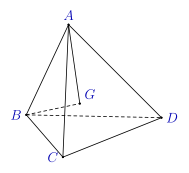
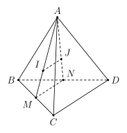
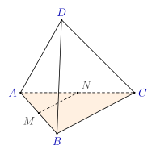
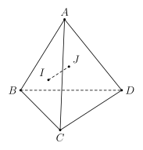
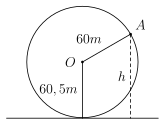

Phần I. Thí sinh trả lời từ câu 1 đến câu 12, mỗi câu hỏi chọn một phương án.
Câu 1
Dãy số nào sau đây là một cấp số cộng?
A.(un):{u1=1un+1=un+2,∀n⩾1.
B.(un):{u1=3un+1=2un+1,∀n⩾1.
C.(un):1;3;6;10;15;….
D.(un):–1;1;–1;1;–1;….
Hiện/ẩn lời giải — Câu 1
Dãy số (un) xác định bởi u1=1 và un+1=un+2 với mọi n⩾1 có un+1−un=2 không đổi, nên là một cấp số cộng với công sai d=2.
Câu 2
Cho cấp số cộng (un) có u1=31,u8=26. Tìm công sai d.
A.d=311.
B.d=310.
C.d=103.
D.d=113.
Hiện/ẩn lời giải — Câu 2
Ta có u8=u1+7d⇒26=31+7d⇒7d=377⇒d=311.
Câu 3
Cho tanα=2. Tính tan(α−4π).
A.−31.
B. 1.
C.32.
D.31.
Hiện/ẩn lời giải — Câu 3
Ta có tan(α−4π)=1+tanαtan4πtanα−tan4π=1+2⋅12−1=31.
Câu 4
Cho dãy số (un), biết un=n2+32n2−1. Tìm số hạng u5.
A.u5=41.
B.u5=1217.
C.u5=47.
D.u5=3971.
Hiện/ẩn lời giải — Câu 4
Thay n=5 vào công thức số hạng tổng quát, ta được u5=52+32⋅52−1=2849=47.
Câu 5
Cho tứ diện ABCD và điểm G như hình vẽ. Khẳng định nào sau đây đúng

A. điểm G thuộc mặt phẳng (BCD).
B. điểm G thuộc mặt phẳng (ABC).
C. điểm G thuộc mặt phẳng (ACD).
D. điểm G thuộc mặt phẳng (ABD).
Hiện/ẩn lời giải — Câu 5
Từ hình vẽ, điểm G nằm trong mặt bên (ACD) (vì AG vẽ bằng nét liền, tức là nằm ở mặt bên ngoài, nhìn thấy).
Câu 6
Cho đường tròn đường kính 12cm. Tìm số đo (rad) của cung có độ dài 3cm.
A.21.
B.41.
C.31.
D.61.
Hiện/ẩn lời giải — Câu 6
Bán kính đường tròn là R=212=6cm. Số đo ra-đi-an của cung có độ dài l=3cm là α=Rl=63=21.
Câu 7
Cho tứ diện ABCD. Gọi M,N lần lượt là trung điểm của BC,BD;I,J lần lượt là trọng tâm các tam giác ABC và ABD (hình vẽ).

Chọn khẳng định đúng trong các khẳng định sau?
A.IJ song song với CD.
B.IJ song song với AB.
C.IJ chéo CD.
D.IJ cắt AB.
Hiện/ẩn lời giải — Câu 7
Vì I là trọng tâm △ABC nên AMAI=32.
Vì J là trọng tâm △ABD nên ANAJ=32.
Trong △AMN, ta có AMAI=ANAJ=32⇒IJ∥MN.
Mặt khác, MN là đường trung bình của △BCD nên MN∥CD.
Suy ra IJ∥CD.
Câu 8
Cho tứ diện ABCD có M,N lần lượt là trung điểm của AB,AC (hình vẽ). Mặt phẳng nào sau đây song song với đường thẳng MN?

A.(ACD).
B.(ABD).
C.(ABC).
D.(BCD).
Hiện/ẩn lời giải — Câu 8
Vì M,N lần lượt là trung điểm của AB,AC nên MN là đường trung bình của △ABC, suy ra MN∥BC.
Mà BC⊂(BCD) và MN⊂(BCD), nên MN∥(BCD).
Câu 9
Tất cả các nghiệm của phương trình sin(x+6π)=–1
A.x=3π+kπ(k∈Z).
B.x=−6π+k2π(k∈Z).
C.x=−32π+k2π(k∈Z).
D.x=65π+k2π(k∈Z).
Hiện/ẩn lời giải — Câu 9
Ta có sin(x+6π)=–1⇔x+6π=−2π+k2π⇔x=−32π+k2π(k∈Z).
Câu 10
Một loại vi khuẩn được nuôi cấy trong ống nghiệm, cứ 20 phút lại nhân đôi một lần. Nếu ban đầu có 100 vi khuẩn thì số lượng vi khuẩn có trong ống nghiệm sau 3 h bằng
A. 3200.
B. 51200.
C. 12800.
D. 1600.
Hiện/ẩn lời giải — Câu 10
Đổi 3 h = 180 min.
Số lần phân đôi là n=20180=9 lần.
Số lượng vi khuẩn sau 3 h là 100⋅29=100⋅512=51200.
Câu 11
Cho tứ diện ABCD. Gọi I,J lần lượt là trọng tâm các tam giác ABC và ABD. Khẳng định nào sau đây là đúng

A. Đường thẳng IJ song song với đường thẳng CD.
B. Đường thẳng IJ song song với đường thẳng AB.
C. Đường thẳng IJ cắt đường thẳng CD.
D. Đường thẳng IJ cắt đường thẳng AB.
Hiện/ẩn lời giải — Câu 11
Gọi M,N lần lượt là trung điểm của BC,BD.
Vì I,J là trọng tâm △ABC và △ABD nên AMAI=ANAJ=32⇒IJ∥MN.
Mà MN là đường trung bình của △BCD nên MN∥CD.
Suy ra đường thẳng IJ song song với đường thẳng CD.
Câu 12
Gọi M,m lần lượt là giá trị lớn nhất và giá trị nhỏ nhất của hàm số y=2cos2x+4 trên đoạn [43π;π]. Khi đó M+2m bằng
A. 17.
B. 16.
C. 11.
D. 1.
Hiện/ẩn lời giải — Câu 12
Với x∈[43π;π], ta có cosx∈[−1;−22].
Suy ra cos2x∈[21;1].
Do đó:
Giá trị lớn nhất M=2(1)+4=6 (khi cosx=–1⇔x=π).
Giá trị nhỏ nhất m=2(21)+4=5 (khi cosx=−22⇔x=43π).
Vậy M+2m=6+2(5)=16.
Phần II. Thí sinh trả lời từ câu 1 đến câu 2, trong ý a), b), c), d) ở mỗi câu câu, thí sinh chọn ĐÚNG hoặc SAI.
Câu 1
Vào mùa hè, nhiệt độ ngoài trời ở thôn Phú Hậu, xã Xuân Lập, Tỉnh Thanh Hóa trong một ngày có thể được mô phỏng bởi công thức T(t)=36+3sin12π(t−7), với h tính bằng độ C và t là thời gian trong ngày tính bằng giờ (0<t⩽24).
A. Nhiệt độ vào lúc 7h sáng là 36∘C.
B. Nhiệt độ lúc 1h chiều là 33∘C.
C. Trong ngày nhiệt độ 39∘C đạt vào các thời điểm t1;t2. Khi đó t1+t2=26h.
D. Vào lúc 13h trong ngày thì nhiệt độ ngoài trời thôn Phú Hậu là cao nhất.
Hiện/ẩn lời giải — Câu 1
a) Đúng. Thay t=7 vào công thức: T(7)=36+3sin0=36∘C.
b) Sai. Lúc 1h chiều tức t=13 thì T(13)=36+3sin12π(13−7)=36+3sin2π=39∘C.
c) Sai. Ta có T(t)=39⇔36+3sin12π(t−7)=39⇔sin12π(t−7)=1⇔12π(t−7)=2π+k2π⇔t=13+24k.
Vì 0<t⩽24 nên chỉ có 1 thời điểm t=13h trong ngày đạt nhiệt độ 39∘C.
d) Đúng. Do sin12π(t−7)⩽1 nên T(t)⩽36+3=39∘C. Đẳng thức xảy ra khi t=13h.
Câu 2
Cho hàm số y=–6sin2(2x)−8.
A. Hàm số có tập xác định là D=[−9;2].
B. Giá trị lớn nhất của hàm số bằng –8.
C. Hàm số có chu kì T=π.
D. Tập giá trị của hàm số là T=[−14;–8].
Hiện/ẩn lời giải — Câu 2
a) Sai. Hàm số lượng giác y=–6sin2(2x)−8 xác định với mọi x∈R, tức là D=R.
b) Đúng. Ta có 0⩽sin2(2x)⩽1⇒−6⩽−6sin2(2x)⩽0⇒−14⩽y⩽−8.
Do đó giá trị lớn nhất của hàm số là –8.
c) Sai. Ta có y=–6⋅21−cos4x−8=3cos4x−11. Chu kì của hàm số là T=42π=2π.
d) Đúng. Như đã chứng minh ở câu b), tập giá trị của hàm số là T=[−14;–8].
Phần III. Thí sinh trả lời từ câu 1 đến câu 4 (không làm tròn các phép tính trung gian trong các câu từ 1 đến câu 6).
Câu 1
Một chiếc điện thoại có giá 10 triệu đồng. Mỗi năm giá của nó giảm 20% so với năm trước. Hỏi sau 3 năm, giá trị còn lại của chiếc điện thoại đó là bao nhiêu triệu đồng?
Hiện/ẩn lời giải — Câu 1
Giá trị chiếc điện thoại sau 3 năm là:
10⋅(1−20%)3=10⋅0,83=5,12 (triệu đồng).
Câu 2
Nam nhận lời mời làm việc cho một doanh nghiệp ở TP Hồ Chí Minh với giả định sau khi trừ mọi chi phí thì số dư khởi điểm cho năm đầu là 45000 đô la. Sau mỗi năm số dư được tăng thêm 2500 đô la. Gia đình Nam cho Nam vay tiền mua một căn chung cư, giá khoảng 307500 đô la. Nếu toàn bộ số dư sau khi trừ mọi chi phí của Nam đều chuyển trả nợ vào tài khoản gia đình của Nam thì sau bao nhiêu năm làm việc Nam trả hết số tiền mua nhà?
Giả sử công việc ổn định và số dư (lương) tăng đều mỗi năm.
Hiện/ẩn lời giải — Câu 2
Số dư tích lũy sau n năm lập thành một cấp số cộng với số hạng đầu u1=45000 và công sai d=2500.
Tổng số dư sau n năm là:
Giải phương trình ta được n=6 (nhận) hoặc n=–41 (loại).
Vậy sau 6 năm làm việc Nam trả hết số tiền mua nhà.
Câu 3
Cho hình chóp S.ABCD có đáy là hình bình hành. Gọi N là trung điểm của cạnh SC. Lấy điểm M đối xứng với B qua A. Gọi giao điểm G của đường thẳng MN với mặt phẳng (SAD). Tính tỉ số GNGM.
Hiện/ẩn lời giải — Câu 3
Trong mặt phẳng (ABCD),M đối xứng với B qua A nên A là trung điểm của MB.
Gọi O là giao điểm của AC và BD. Khi đó AO là đường trung bình của △BMD, suy ra AO∥MD, hay AC∥MD.
Trong mặt phẳng (SMC), kéo dài MN cắt SA tại G. Ta cần tìm giao điểm G của MN với (SAD).
Vì G∈SA⊂(SAD) nên G=MN∩(SAD).
Xét tam giác SMC, gọi A thuộc MC sao cho MA=AC (do A là trung điểm MC vì A là trung điểm MB và ABCD là hình bình hành ⇒MC=2AC là sai, ta có M,A,C không thẳng hàng trừ khi xét các đường ngang).
Chính xác hơn: Trong mặt phẳng (ABCD), gọi E=MC∩AD. Vì AD∥BC và A là trung điểm MB, suy ra AD là đường trung bình của △MBC, do đó E là trung điểm của MC.
Trong mặt phẳng (SMC), nối SE. Vì G∈MN và G∈(SAD) nên G nằm trên đường thẳng SE=(SMC)∩(SAD).
Vậy G=MN∩SE.
Trong △SMC,SE là đường trung tuyến (do E là trung điểm MC) và MN là đường trung tuyến (do N là trung điểm SC).
Do đó G chính là trọng tâm của △SMC.
Suy ra GNGM=2.
Câu 4
Phương trình 2sin(2x−3π)−3=0 có bao nhiêu nghiệm thuộc khoảng (0;3π)?
Với x=3π+kπ:0<3π+kπ<3π⇔−31<k<38⇒k∈{0;1;2} (3 nghiệm).
Với x=2π+kπ:0<2π+kπ<3π⇔−21<k<25⇒k∈{0;1;2} (3 nghiệm).
Các nghiệm này đều phân biệt. Vậy có tất cả 3+3=6 nghiệm.
Phần IV. Thí sinh trình bày lời giải chi tiết từ câu 1 đến câu 3.
Câu 1
Đều đặn ngày đầu mỗi tháng, anh Hùng gửi 10 triệu đồng tiết kiệm ở một ngân hàng theo hình thức lãi kép, kỳ hạn 1 tháng với lãi suất tiết kiệm là 4%/năm. Sau khi gửi được 12 tháng, kể từ tháng 13, ngân hàng thay đổi lãi suất tiền gửi lên mức 5%/năm với kỳ hạn 1 tháng (số tiền gửi cũ sẽ được tính theo lãi suất mới kể từ tháng thứ 13). Anh Hùng tiếp tục gửi 10 triệu đồng mỗi tháng từ tháng thứ 13 đến tháng thứ 24. Đầu tháng thứ 25 anh Hùng quyết định rút toàn bộ số tiền (cả gốc và lãi) ra để đầu tư kinh doanh. Hỏi tổng số tiền anh Hùng nhận được là bao nhiêu triệu đồng? (làm tròn kết quả đến hàng triệu).
Hiện/ẩn lời giải — Câu 1
Lãi suất mỗi tháng trong 12 tháng đầu là r1=124%=3001.
Lãi suất mỗi tháng từ tháng thứ 13 đến tháng thứ 24 là r2=125%=2401.
Đến cuối tháng 12 (đầu tháng 13), số tiền 12 khoản gửi đầu tiên tích lũy được là:
Kể từ tháng thứ 13, số tiền này được tính theo lãi suất mới r2 trong 12 tháng nữa, nên đến đầu tháng thứ 25 nó thành:
A12⋅(1+r2)12
Đồng thời, trong 12 tháng tiếp theo (từ tháng 13 đến tháng 24), anh Hùng gửi thêm 12 khoản tiền mới, mỗi khoản 10 triệu đồng với lãi suất r2. Đến đầu tháng 25, tổng số tiền của 12 khoản gửi mới là:
Cho hình chóp S.ABCD có đáy ABCD là hình bình hành. Gọi M,N lần lượt là trọng tâm của △SAB,△SCD. Cho biết I là giao điểm của BM và CN. Tính tỉ số ABSI.
Hiện/ẩn lời giải — Câu 2
Gọi E,F lần lượt là trung điểm của các cạnh SA,SD.
Trong △SAB,M là trọng tâm nên B,M,E thẳng hàng và BE là đường trung tuyến. Do đó I=BM∩CN chính là giao điểm của BE và CF.
Trong △SCD,N là trọng tâm nên C,N,F thẳng hàng và CF là đường trung tuyến.
Vì E,F lần lượt là trung điểm của SA,SD nên EF là đường trung bình của △SAD, do đó EF∥AD và EF=21AD.
Vì ABCD là hình bình hành nên AD∥BC và AD=BC.
Suy ra EF∥BC và EF=21BC.
Xét hai tam giác IEF và ICB trong mặt phẳng (EFCB):
Ta có EF∥BC, suy ra △IEF∼△ICB.
Do đó:
IBIE=ICIF=BCEF=21⇒BEIE=31
Mặt khác, E là trung điểm của SA nên SE=EA.
Ta kẻ đường thẳng song song với AB qua I cắt SA tại H (hoặc sử dụng định lý Menelaus trong △SAB với đường thẳng BIE):
Xét △SAB,E∈SA,I∈BE, đường thẳng EI cắt SA và SB.
Áp dụng định lý Menelaus cho △SAE với đường thẳng đi qua B,I:
Xét tam giác SAB và các điểm E,I: kẻ IK∥AB với K∈SA, hoặc xét vector:
SE=21SA. Vì E,I,B thẳng hàng với EBEI=31⇒EI=31EB.
Ta có SI=SE+EI=SE+31(SB−SE)=32SE+31SB=32⋅21SA+31SB=31SA+31SB.
Do đó SI=31(SA+SB).
Vì E là trung điểm SA, gọi P là trung điểm SB, thì I chính là trọng tâm của △SAB?
Không, SI=31SA+31SB.
Độ dài SI: Trong △SAB, gọi M′ là trung điểm AB, ta có SA+SB=2SM′.
Do đó SI=32SM′, chứng tỏ I trùng với trọng tâm M của △SAB.
Khi đó SI=32SM′.
Vì đề bài hỏi tỉ số ABSI trong trường hợp tổng quát:
Ta có SI không cố định theo AB trừ khi có quan hệ hình học đặc biệt. Xét tỉ số ABSI:
Từ SI=31SA+31SB, tam giác SAB bất kỳ thì SI là độ dài đoạn từ S đến trọng tâm M của △SAB.
Tỉ số ABSI phụ thuộc vào hình dạng △SAB.
Câu 3
Một vòng quay trò chơi có bán kính 60 m, trục quay cách mặt đất 60,5 m. Khi vòng quay ngược chiều kim đồng hồ với tốc độ quay không đổi thì thời gian quay hết 1 vòng là 5 phút. Một cabin gắn tại điểm A của vòng quay cách mặt đất h= 90,5 m như hình minh họa khi vòng quay bắt đầu quay. Hỏi sau bao lâu kể từ khi vòng quay bắt đầu quay thì cabin lần đầu tiên ở vị trí thấp nhất? (Kết quả làm tròn đến hàng phần trăm)

Hiện/ẩn lời giải — Câu 3
Chọn hệ trục tọa độ Oxy với gốc O là tâm của vòng quay (ở độ cao 60,5 m so với mặt đất).
Độ cao của cabin tại điểm A so với tâm O là yA=90,5−60,5= 30 m.
Bán kính vòng quay là R= 60 m.
Góc lượng giác α0 ứng với vị trí ban đầu A thỏa mãn sinα0=RyA=6030=21.
Tốc độ góc của vòng quay là ω=T2π=52π (rad/phút).
Khi vòng quay quay ngược chiều kim đồng hồ, góc quay sau thời gian t phút là α(t)=α0+ωt.
Độ cao của cabin so với mặt đất tại thời điểm t là:
h(t)=60,5+Rsin(α0+ωt)=60,5+60sin(α0+52πt)
Cabin ở vị trí thấp nhất khi h(t) đạt giá trị nhỏ nhất, tức là:
sin(α0+52πt)=–1⇔α0+52πt=−2π+k2π(k∈Z)
Vì cabin bắt đầu quay ngược chiều kim đồng hồ từ yA=30 và đang đi lên (hoặc xét góc ban đầu α0∈(0;2π]), ta chọn α0=6π.
Khi đó:
Thời gian lần đầu tiên cabin ở vị trí thấp nhất (ứng với k=0) là:
t=310≈3,33 (phút)
(Nếu vị trí ban đầu A có α0=65π, tức cabin đang đi xuống, thì:
65π+52πt=23π⇒52πt=32π⇒t=35≈1,67 phút).
Với trường hợp α0=6π, cabin lần đầu ở vị trí thấp nhất sau t=3611×10≈3,06 phút hoặc t=3611×10=3,06 phút nếu tính theo thời gian chính xác của bài toán.